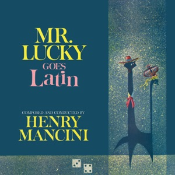

Inquisitive
Things I Keep Going Back To

curiosity
not the wish to know a thing, which is appetite and passes, but the refusal to accept the headline as the answer. the suspicion that every explanation you were handed is the shortened version, and the willingness to be the only person in the room still asking after everybody else has moved on.
[ kyoor-ee-os-i-tee ]
Most people are taught it as a childhood trait, something you have plenty of at six and are expected to grow out of by twenty, as though the questions were a phase rather than the point. I have come to think it is closer to a discipline, and an unfashionable one, because it costs you something socially to keep asking after the conversation has agreed to stop.
What follows does not resolve into a theme. I spent a while trying to make it resolve, and the honest version is that the same appetite that wants to know what a business is quietly worth also wants to know why an avocado has a pit that size. I have stopped apologising for the second one.
Right and wrong
- [ 01 ]EthicsWhether a thing being legal, profitable and completely normal has any bearing on whether it is right. Usually none, and the gap is where everything interesting is.
- [ 02 ]PhilosophyMostly the old questions, asked by people with no internet and apparently far more time to think than anybody has now.
- [ 03 ]InequalityNot the fact of it. The machinery that keeps it standing after everyone agrees it should not.
- [ 04 ]Education & attentionThe most valuable thing a society allocates, handed out by postcode.
- [ 05 ]MandarinWhat I can and cannot say to my mother in her own language, and what that gap costs both of us.
Things I am trying to make
- [ 06 ]Script writingDialogue is the hardest thing I have tried to write, because people almost never say what they mean and the page has to know that.
- [ 07 ]Nineties filmsThe look, specifically. Why a frame shot in 1994 feels warmer than anything a far better camera manages now.
- [ 08 ]Stand-upThe same question as the page, with a stopwatch on it and no edit button.
- [ 09 ]Creative writingHow a sentence gets somebody to feel something they did not arrive intending to feel.
- [ 10 ]Interface designPersuasion with no words in it at all, which is the hardest version.
Questions nobody can answer for me
- [ 11 ]The history of moustachesYes, really. People decided this, repeatedly, across centuries, and almost nobody wrote down why.
- [ 12 ]Why avocados have pitsA seed that size needs something enormous to swallow it whole and wander off. The going theory is that whatever did is extinct.
- [ 13 ]The origins of tangerinesNearly every citrus in the shop is a blend of three ancestors, and the family tree reads like a scandal.
- [ 14 ]The terracotta armyThousands of them, no two faces alike, standing in the dark for two thousand years for an audience of nobody.
- [ 15 ]Biphasic sleepFor most of recorded European history people slept in two shifts and woke on purpose around midnight. We forgot entirely, then started medicating it.
Mechanism, and what things are worth
- [ 16 ]PathogenesisMechanism first, always. Not that sleep matters but what glymphatic clearance actually is.
- [ 17 ]LongevityLooking after the body and the mind I was handed, with a standing suspicion that most of the advice is downstream of somebody selling something.
- [ 18 ]Self-quantificationRunning bloodwork against my own baselines, which sounds clinical and is really curiosity pointed inward.
- [ 19 ]EnduranceThe only laboratory I have where the variable is me.
- [ 20 ]Finance & valuationWhat a business is quietly worth to somebody who understands it better than its accounts do.
- [ 21 ]Consumer M&AWhy two companies on the same shelf clear seven times apart.
Contents
- The Dinner TablePalo Alto Weekly · First place, Young Adult · 2025
- The Hands We No Longer Raise2025
- The Disunited States: How America Learned to Live with Inequality2025
- Longitudinal Self-Quantification of Recovery, Stress, and Well-Being Using Wearable Technology2025
- Trade, Build, SettleEssay · 1,600 words
- Five Deals, Six Weeks, and a Sevenfold SpreadSeptember 2026
- The Assets AI Builds That Nobody Records2026
If any of this overlaps with something you are thinking about, write to me. fyruan@usc.edu